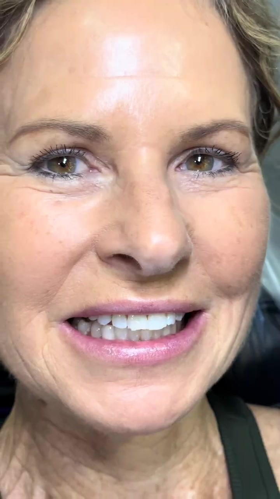
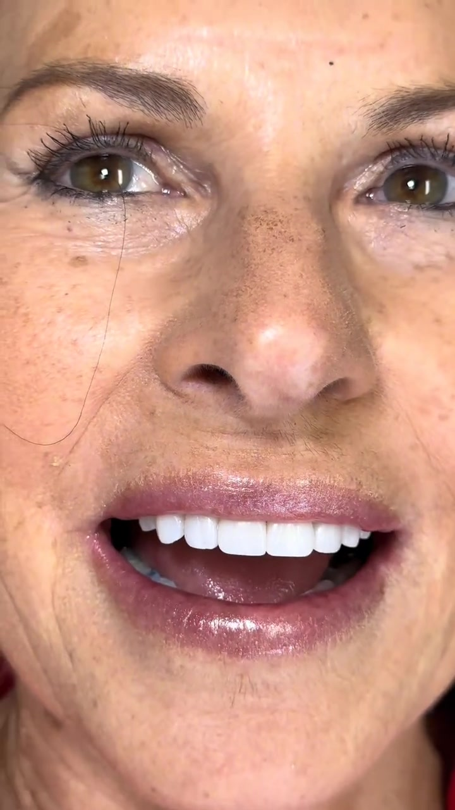
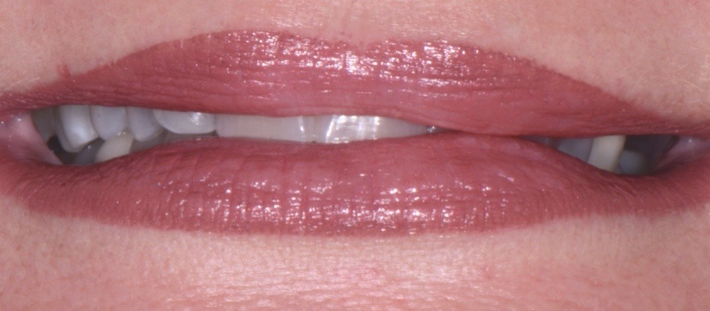
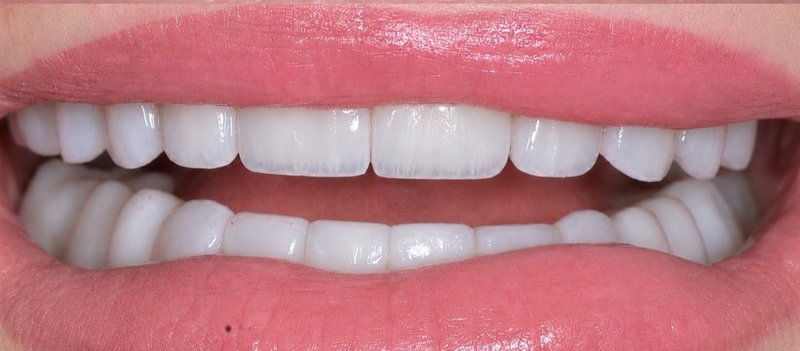
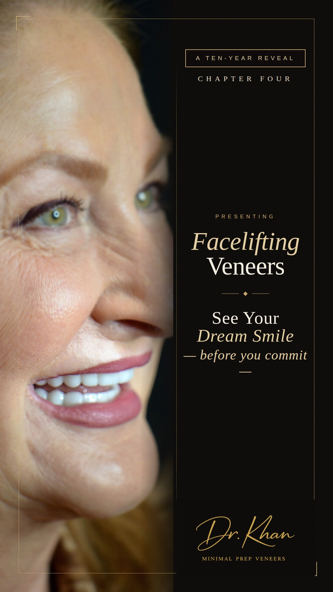

Actual patient
Case 01
Minimal-prep porcelain veneers, upper arch
Hand-characterized porcelain matched to her face and complexion — not a shade tab.
Fort Worth, Texas · By appointment
No-shave and minimal-prep porcelain veneers by Dr. Khan — smile design that preserves your natural enamel, in a private Fort Worth studio.
Our philosophy
The best compliment my work can receive is that no one can tell it's there. A veneer should disappear into the way you laugh.Dr. Khan · Veneer Suite
Real patients, unretouched. Drag the handle to compare — or watch the reveal as it happened.


Case 01
Hand-characterized porcelain matched to her face and complexion — not a shade tab.


Case 02
Minimal-prep porcelain veneers, upper and lower. Worn, shortened teeth restored to full proportion — photographed unretouched.
“They look incredibly natural — no one has been able to tell they're veneers, which was exactly what I wanted. I'm taking so many more pictures now and actually smiling in them without thinking twice.”
Veneer patient · Verified Google review
From the chair, as it happened. Tap a film to play with sound.

The signature approach
A smile doesn't stop at the teeth. Worn, shortened teeth let the lower face collapse inward; restoring their proportion supports the lips and softens the look of the whole face — a lift, without surgery.
It's why every case here begins with a full-face study, and why you see your designed smile — on you, in motion — before you commit to anything.
See yours first
The doctor
Dr. Khan earned her Doctor of Dental Surgery at the University of Toronto, where she also taught — lecturing dental students on restorative techniques within the ADA-accredited curriculum before she ever opened a practice of her own. Since then she has completed more than 2,000 hours of continuing education in cosmetic dentistry, implantology, and Invisalign, and built her Fort Worth practice around one conviction most cosmetic dentistry quietly ignores: the best work is the work no one can detect.
She focuses on no-shave and minimal-prep porcelain veneers — conservative techniques that preserve natural enamel — and designs every smile against the patient's face, not a shade tab. An invited speaker at dental schools and professional forums on esthetic dentistry, she's also one of DFW's most-followed cosmetic dentists, sharing reveals on Instagram exactly as they happen in the chair — unretouched, with the patient's own reaction.
DDS, University of Toronto · Cosmetic Dentistry, Smile Trend Institute · Invisalign Gold Provider · Aesthetic & Implant Continuum trained · 2,000+ CE hours
Follow her work — @drkhan__Your first visit
A consultation here is a conversation, not a sales appointment. You'll leave knowing exactly what's possible — and you'll never be pressured toward more than you came for.
I've had my veneers for a month now and honestly could not be happier. They look incredibly natural — no one has been able to tell they're veneers, which was exactly what I wanted. I'm taking so many more pictures now and actually smiling in them without thinking twice.
Dr. Khan takes the time to listen, explain procedures clearly, and make sure you're comfortable every step of the way. The level of care and attention to detail is outstanding. I always feel confident that I'm in good hands.
From the moment you walk in, you're greeted with warmth and professionalism. The office is clean, well-organized, and the staff are always courteous and supportive. Highly recommend!
Questions, answered honestly
No-shave (also called no-prep) veneers are ultra-thin layers of porcelain — often around the thickness of a contact lens — bonded directly over your natural teeth with little to no enamel removal. Because your tooth structure stays intact, most cases need no anesthetic and no temporary veneers while your porcelain is crafted.
Traditional veneers typically require reshaping the front of each tooth to make room for the porcelain. Minimal-prep means we refine only what the case truly requires — often just light polishing of the enamel surface — and no-shave means essentially none at all. Dr. Khan's philosophy is simple: remove the least tooth structure the result allows. Enamel doesn't grow back, and porcelain bonds strongest to it.
Many people are — especially those with smaller teeth, gaps, worn edges, or smiles that could use more fullness. Because no-prep veneers add a thin layer, teeth that are already prominent or significantly crowded may do better with a minimal-prep approach so the result never looks bulky. Candidacy is exactly what your consultation determines, and if veneers aren't the right answer for you, Dr. Khan will say so.
That is the entire point of this studio. Each veneer is hand-characterized — subtle translucency at the edges, natural surface texture, a shade designed against your complexion rather than picked from a tab. The compliment we design for: no one can tell.
No-shave cases are typically entirely comfortable — no drilling into tooth structure means most patients need no anesthetic at all. Minimal-prep cases involve only conservative surface refinement, and comfort is managed carefully throughout.
With good home care and routine visits, porcelain veneers commonly last a decade or more — many well beyond. Conserving enamel helps here too: porcelain bonded to enamel holds stronger over time than porcelain bonded to deeper tooth structure. We'll also talk honestly about habits (like night grinding) that affect longevity and how to protect your investment.
Typically two to three: a consultation and smile study, then a design preview, then placement. No-shave cases usually skip temporaries entirely, so you wear nothing artificial while your porcelain is being crafted.
It depends on how many teeth we're designing and what the case requires — a two-veneer refinement and a full smile design are very different projects. You'll get exact, transparent numbers at your consultation before any decision is made, with no pressure attached. Financing options are available and we'll walk you through them.
Straight answers on conservative veneer dentistry, written for patients — not search engines.
The studio
A private five-room studio on Henderson Street — gold glass mosaic, matte black hex, brushed brass throughout. Built for one thing: unhurried, considered dentistry.
416 S Henderson St, Fort Worth, TX 76104 · Opening late summer 2026. Serving Fort Worth from the Near Southside — minutes from the Medical District, Magnolia Avenue, downtown, and TCU.
i. What are you hoping for?
ii. Your ideal timeline?
iii. Best window for a private consultation?
iv. Where can we reach you?
Or simply call — 817-926-1300